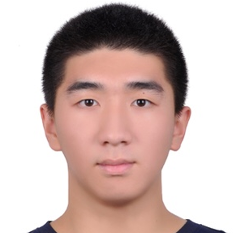
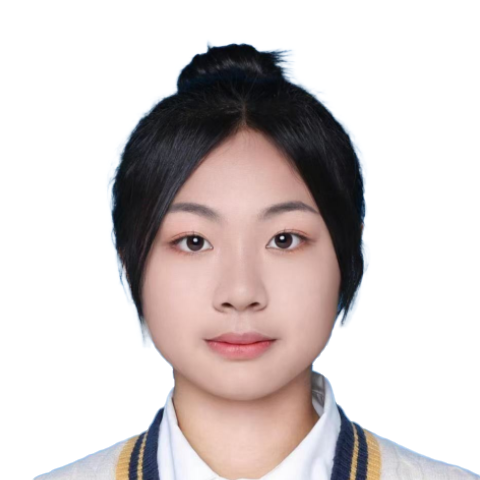
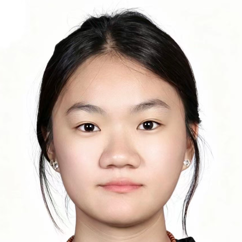
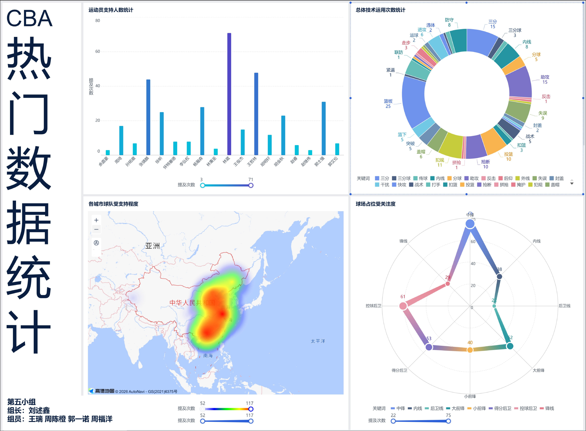
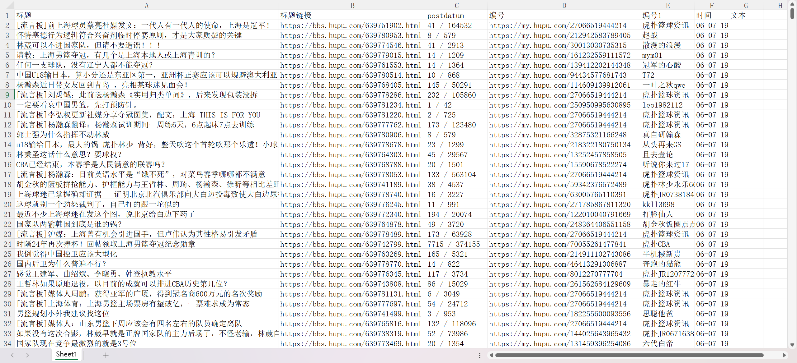

项目背景： 随着职业篮球联赛（CBA）竞技水平的不断提升，球队和球员的技术运用数据已成为战术分析与比赛决策的核心依据。然而，当前多数技术统计仍停留在基础得分、篮板、助攻等表层指标，缺乏对“技术动作细分类别”（如三分球、内线、反击、失误、封盖、关键球等）的深度挖掘，也难以直观呈现不同位置球员（控球后卫、锋线、中锋等）的贡献差异。
项目目标： 通过八爪鱼RPA技术实现数据获取，利用Excel做数据清洗与整理，结合FineBI进行可视化分析，网页展示CBA热门数据统计专题的体育洞察。
项目意义： 整合了运动训练专业的知识，探索了AI工具在体育领域的实际应用。



自动化流程机器人
实现Excel数据自动获取
清洗与函数
指标拆解
智能可视化
拖拽式大屏与仪表盘制作
网页制作
长期展示与分享

